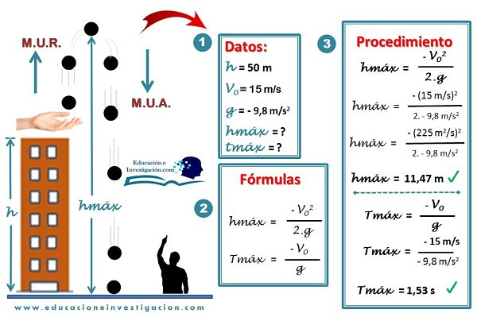

DEFINICIÓN DE FUNCIÓN MATEMÁTICA
Una función matemática es una relación que se establece entre dos conjuntos, a través de la cual a cada elemento del primer conjunto se le asigna un único elemento del segundo conjunto o ninguno.
Al conjunto inicial o conjunto de partida también se lo llama dominio; al conjunto final o conjunto de llegada, en tanto, se lo puede denominar codominio.
Por lo tanto, dados un conjunto A y un conjunto B, una función es la asociación que se produce cuando a cada elemento del conjunto A (el dominio) se la asigna un único elemento del conjunto B (el codominio).
Al elemento genérico del dominio se lo conoce como variable independiente; al elemento genérico del codominio, como variable dependiente.
Esto quiere decir que, en el marco de la función matemática, los elementos del codominio dependen de los elementos del dominio.
Definicion de Dominio y Rango
El dominio y el rango de una función están normalmente limitados por la naturaleza de la relación. Por ejemplo, considera la función de tiempo y altura que ocurre cuando lanzas una pelota al aire y luego la atrapas.
El tiempo es la entrada, la altura es la salida. El dominio es cada valor de tiempo durante el lanzamiento, e inicia desde el instante en que la pelota abandona tu mano hasta el instante que la pelota regresa a ella.
El tiempo antes de que la lances y el tiempo después de que la atrapas es irrelevante, ya que la función sólo aplica para la duración del lanzamiento. Digamos que la pelota estuvo en el aire durante 10 segundos — en ese caso, el dominio es 0-10 segundos.
Ya que el tiempo transcurre continuamente durante éste intervalo, no podemos escribir cada posible salida, sólo el valor inicial y el valor final.
El rango es cada altura de la pelota mientras está en el aire, e incluye todas las alturas, desde la altura de tu mano cuando lanzaste la pelota, hasta el punto más alto alcanzado antes que ésta empezara a caer.
Si tu mando estaba a 3 pies del suelo cuando aventaste y atrapaste la pelota, y la distancia más alta que alcanzó fue de 12 pies también con respecto al suelo, entonces el rango es de 3-12 pies.
Ya que la altura cambia constantemente durante éste intervalo, no podemos escribir cada posible salida, sólo el valor inicial y el valor final.
¿Qué es un Plano cartesiano?
Se conoce como plano cartesiano, coordenadas cartesianas o sistema cartesiano, a dos rectas numéricas perpendiculares, una horizontal y otra vertical, que se cortan en un punto llamado origen o punto cero. La finalidad del plano cartesiano es describir la posición o ubicación de un punto en el plano, la cual está representada por el sistema de coordenadas. El plano cartesiano también sirve para analizar matemáticamente figuras geométricas como la parábola, la hipérbole, la línea, la circunferencia y la elipse, las cuales forman parte de la geometría analítica.Definicion de CINEMATICA
Cinemática es una disciplina de la física y la mecánica, responsable de estudiar y describir el movimiento de los objetos en cuanto a las variables de trayectoria y tiempo. El término cinemática se origina de la palabra griega κινέιν o kinéin , que quiere decir 'mover o desplazar'. Esta disciplina no se ocupa de determinar las causas que generan el movimiento, sino se orienta básicamente a describir el desplazamiento para identificar su duración.Definicion de la Caida Libre
La caida libre es el movimiento donde se deja caer un objeto desde cierta altura y mientras este cae,no exite resitencia o elemento que aparezca en su camino para interrumpirlo. Por esa razon se llama "libre".
